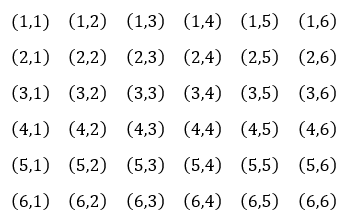

Probability is the chance or likelihood that something will occur.
Objectives
Studends will be able to
Identify outcomes, events, and the sample space for an experiment.
Calculate basic probability.
Calculate the probability of the complement of an event.
Calculate probabilities involving "and" and "or".
Subsection5.1.1Basic Probability
We will start by defining some important terminology.
Terminology.
Experiment
An experiment is a repeatable procedure or test being done. Common examples are flipping a coin, rolling a pair of dice, drawing a playing card from a deck, or taking a COVID test.
Outcome
An outcome is one possible result of an experiment. When drawing a playing card from a deck, one possible outcome is drawing the Queen of Spades. Another outcome is drawing the Two of Diamonds.
Event
An event is a particular outcome or set of outcomes. When rolling a pair of dice, one event is rolling "doubles", meaning that the same value is shown on both dice. (There are six different outcomes that make up this event.) Another event could be rolling a total of two.
Sample Space
The sample space of an experiment is the set of all possible outcomes. When flipping a coin, the sample space consists of the two possible outcomes: Heads and Tails. We would write that as \(S=\lbrace H,T \rbrace\text{.}\)
Probability
The probability of an event is the likelihood that it will occur, usually expressed as a fraction, decimal, or percentage. When flipping a coin, the probability of flipping heads is 50%.
Consider the experiment of flipping a coin three times. We can denote, for example, the outcome of getting heads on the first flip, tails on the second flip, and tails on the third flip as \(HTT\text{.}\) Using this notation, the sample space can be written as follows:
The event \(E\) of rolling at least two tails is \(E=\lbrace HTT{,}\,THT{,}\,TTH{,}\,TTT\rbrace\text{.}\)
There are four outcomes in which we get at least two tails out of the total of eight possible outcomes. Assuming it is a fair coin, meaning that all of the outcomes are equally likely, then the probability of the event \(E\text{,}\) which we write using function notation \(P(E)\) is:
To summarize, when all outcomes are equally likely, probability can be calculated as the number of ways what you are looking for occurs divided by the total number of things that can occur. A more formal definition follows.
Basic Probability.
If all outcomes are equally likely, the probability that event \(E\) occurs can be calculated as follows.
\begin{equation*}
P(E)=\frac{\text{Number of outcomes corresponding to E}}{\text{Number of outcomes in the sample space}}
\end{equation*}
If an event is impossible, its probability is zero, and if an event is guaranteed, its probability is one or 100%. All other events have probabilities between zero and one:
If you obtain a probability that is negative or greater than one, check your work—there is a mistake somewhere.
Example5.1.3.
Let’s say you have a bag with 40 truffles, 28 dark chocolate and 14 milk chocolate. If you pick a truffle at random, what is the probability that it will be dark chocolate?
Solution.
Because we are picking a cherry at random, we may assume that all outcomes (truffles) are equally likely, so we may use the basic probability formula.
It isn’t necessary to write sets for the sample space and the event because we already know how many items are in each, although writing the sets would not be a problem.
The probability of picking a dark chocolate truffle is
\begin{equation*}
P(\text{dark chocolate})=\frac{\text{number of dark chocolate truffles}}{\text{total number of truffles}}=\frac{28}{40}
\end{equation*}
We can simplify to \(\frac{7}{10}\text{.}\) It would also be correct to express the probability as 0.7 or 70%.
While probability theory has far-reaching applications in such fields as medicine, business, politics, and science, we will focus mostly on applications in games and gambling because less background knowledge is required to understand them. In particular, we will take many examples from games involving cards and dice.
Cards.
A standard American deck of playing cards consists of four suits (hearts, spades, diamonds and clubs). Spades and clubs are black; hearts and diamonds are red.
Each suit contains 13 cards, each of a different rank:
An Ace (A),which may be considered a low card, a high card, or both, depending on the game,
One each of cards numbered two through ten,
A Jack (J),
A Queen (Q), and
A King (K).
Jacks, queens, and kings are considered face cards, and jacks, queens, kings, and aces are considered picture cards.
There are a total of 52 cards in the standard deck.
Some games make use of two extra cards, called jokers, which may be considered wild cards.
Example5.1.4.
Find the probability of getting an ace when drawing a single card from a standard 52-card deck.
Solution.
There is one ace in each of the four suits, so there are four aces in the deck out of the 52 total cards. Therefore, the probability of drawing an ace is
Find the probability of getting a black face card when drawing a single card from a standard deck.
Solution.
There are three face cards of each suit, and two of the suits are black. So, there are six black face cards, and the probability of drawing one of them is
\begin{equation*}
P(\text{black face card})=\frac{6}{52}=\frac{3}{26}
\end{equation*}
or approximately 11.54%.
Dice.
Many board games use two dice, each with six sides. Each side has a different number of dots: one through six.
The sample space for the 36 possible outcomes of rolling two dice is shown in the grid below. In each ordered pair, the first component represents the number of dots shown on the first die and the second component represents the number of dots shown on the second die.

Example5.1.6.
When rolling two dice, if both show the same number it is called "doubles". What is the probability of rolling doubles?
Solution.
There are six ways to roll doubles, \((1,1)\) through \((6,6)\text{,}\) out of the total of 36 possible outcomes. The probability is
Subsection5.1.2Probability of "And" and "Or" Events
In mathematics, we use the words "and" and "or" in a very particular way.
"And".
Let \(A\) and \(B\) be two events. Then the event "\(A\) and \(B\)" is written \(A\cap B\text{.}\)
It is the intersection (or overlap) of \(A\) and \(B\text{,}\) meaning both must be true.
For example when rolling a single die, suppose \(A=\lbrace2{,}3{,}5 \rbrace\) is the event of rolling a prime number and \(B=\lbrace 1{,}3{,}5 \rbrace\) is the event of rolling an odd. Then
\begin{equation*}
A\cap B = \lbrace 3{,}5 \rbrace
\end{equation*}
is the event of rolling a number that is both prime and odd.
Or.
Let \(A\) and \(B\) be two events. Then the event "\(A\) or \(B\)" is written \(A\cup B\text{.}\)
It is the union (or compilation) of \(A\) and \(B\text{,}\) meaning either \(A\) or \(B\) or both must be true.
If \(A=\lbrace2{,}3{,}5 \rbrace\) is the event of rolling a prime number and \(B=\lbrace 1{,}3{,}5 \rbrace\) is the event of rolling an odd, then
is the event of rolling a number that is either prime or odd (or both).
Example5.1.8.
In the experiment of drawing a single card from a standard deck, event \(A\) is "drawing a seven" and event \(B\) is "drawing a heart". How many elements are in the events \(A \cap B\) and \(A \cup B\text{?}\)
Solution.
Event \(A\ cap B\) consists of the sevens that are also hearts. There is only one seven of hearts, so there is one element in \(A\capB\text{.}\)
Event \(A \cup B\) consists of all the sevens and all the hearts. There are four sevens and 13 hearts, but we need to be careful not to count the seven of hearts twice.
We can say that there are four sevens, which includes the seven of hearts, and 12 additional hearts for a total of 16 elements in event \(\cup B\text{.}\)
To find the total number of cards that are sevens or hearts, we added the number of sevens plus the number of hearts that are not sevens. Another way to think about this is adding the number of sevens plus the number of hearts and subtracting the intersection which is one card: the seven of hearts. That would give us
\begin{equation*}
4+13-1=16
\end{equation*}
cards. In general, the number of outcomes in event \(A \cup B\) is equal to the number of outcomes in \(A\) plus the number of outcomes in \(B\) minus the number of outcomes in \(A \cap B\text{.}\)
we can generalize this approach to write a formula for the probability of an "or" event.
Probability of A or B.
We have two equivalent methods to calculate the probability of an "or" event:
\begin{equation*}
P(A \cup B)=\frac{\text{Number of outcomes corresponding to }A \cup B}{\text{Number of outcomes in the sample space}}
\end{equation*}
\begin{equation*}
P(A \cup B)=P(A)+P(B)-P(A \cap B)
\end{equation*}
Example5.1.9.
An outreach program for STEM majors a college is open to female students and first-generation students, which are students who are the first in their families to go to college. If 53% of the students at the college are female, 38% of the students are first-generation, and 17% are female first-generation students, what percentage of students are eligible for the program?
Solution.
Let \(A\) be the event that a student is female and let \(B\) be the event that a student is a first-generation student.
We are given that \(P(A)=0.53\text{,}\)\(P(B)=0.38\text{,}\) and \(P(A \cap B)=0.17\)
We are looking for the percentage of students who are female or first-generation, or \(P(A \cup B)\text{,}\) which we can find using the formula.
\begin{align*}
P(A\cup B) \amp=P(A)+P(B)-P( A\cap B) \\
P(A \cup B) \amp=0.53+0.38-0.17 \\
P(A \cup B) \amp=0.74
\end{align*}
Therefore, 74% of students are eligible for the program.
Subsection5.1.3Complementary Events
In the previous example, we found that 74% of students at a particular college are eligible for an outreach program. We could quickly determine the percentage of students who are not eligible by subtracting from 100% to find that 36% are not eligible.
The two events, "being eligible for the program" and "not being eligible for the program", are complementary, meaning that together they complete the full list or full complement of possible outcomes. For two events to be complementary, it is also necessary that they cannot occur at the same time.
We will see situations later in this chapter where it is significantly easier to calculate the probability that something doesn’t happen than the probability that it does. We will use the strategy of first finding the probability that the event doesn’t happen and then subtracting from one or 100%.
Example5.1.10.
Find the probability of getting a sum of less than 11 when rolling two dice.
Solution.
Looking at the table in Assemblage , we see that there are three ways to obtain a sum of 11 or higher, which is the complement of the event we are interested in. This means that there must be \(36-3=33\) ways to obtain a sum less than 11.
The commplement of event \(E\text{,}\) written \(\overline{E}\) is the event that \(E\) does not happen.
We read \(\overline{E}\) as "\(E\) bar" or "not \(E\)".
\begin{equation*}
P(\overline{E})=\frac{\text{Number of outcomes that do not correspond to }E}{\text{Number of outcomes in the sample space}}
\end{equation*}
If you draw a card at random from a standard deck, what is the probability that it is not a diamond?
Solution.
The probability that the card is a diamond is \(\frac{13}{52}=0.25\text{.}\)
Thus the probability that the card is not a diamond is \(1-0.25=0.75\text{.}\)
Exercises5.1.4Exercises
1.
Find the probability of rolling a one or a six when a six-sided die is rolled.
2.
Find the probability of getting a number less than five when a six-sided die is rolled.
3.
Find the probability of getting a sum less than five when a pair of standard dice are rolled.
4.
A laundry bag contains eight brown socks and six black socks. A single sock is drawn from the bag at random. Find the probability that it is brown.
5.
In an experiment, a coin is flipped and a standard die is rolled. Write the sample space.
6.
Consider an experiment where four coins are flipped.
List the outcomes in the sample space. (There should be 16 outcomes.)
List the outcomes in the event that at least two coins show tails.
Find the probability that at least two coins show tails.
7.
In the casino game of roulette, a ball is dropped into a spinning wheel. Gamblers win or lose varying amounts based on where it stops. The wheel contains numbers 0, 00, and 1-36. Both 0 and 00 are green, half of the number 1-36 are red and the other half are black. Assuming that all outcomes are equally likely, find the probability of each outcome.
The ball lands on a red number.
The ball lands on a green number.
The ball lands on the 14.
The ball lands on 13, 14, 15, 16, 17, 18, 19, 20, 21, 22, 23, or 24.
8.
A single card is drawn from a standard deck. Find the probability of each event.
The card is a face card.
The card is a heart.
The card is both a face card and a heart.
The card is a face card or a heart.
9.
A pair of standard dice are rolled. Find the probability of each event.
The sum is less than five.
The sum is a prime number.
The sum is a prime number less than five.
The sum is less than five or a prime number.
10.
Let \(A=\lbrace a{,}b{,}d{,}f{,}h{,}k{,}y{,}z\rbrace\) and \(B=\lbrace b{,}c{,}d{,}w{,}z \rbrace\text{.}\) Find each event.
\(\displaystyle A\cup B\)
\(\displaystyle A \cap B\)
11.
There are 26 letters in the alphabet, and five of them are vowels. If you draw a letter at random, what is the probability that it is not a vowel?
12.
In a study of brand recognition, 751 consumers reported that they had heard of WalMart, and 14 reported that they had not heard of WalMart. Find the probability that a randomly selected consumer does not recognize WalMart.
13.
A review of athletic participation rates at a high school reveals that 26% of athletes are on a soccer team, 18% of athletes are on a swim team, and 6% are on both a soccer team and a swim team.
What is the probability that an athlete selected at random is on a soccer or swim team?
What is the probability that an athlete selected at random is on neither a soccer team nor a swim team? (Use your answer to the previous part.)
14.
The results of a Pew Research Center survey of pet owners 1
Brown, A. (2023, July 7). About half of U.S. pet owners say their pets are as much a part of their family as a human member. Pew Research Center. https://www.pewresearch.org/short-reads/2023/07/07/about-half-us-of-pet-owners-say-their-pets-are-as-much-a-part-of-their-family-as-a-human-member/
are shown in the table.
Table5.1.12.Pet Ownership
Response
Percentage
Just Dogs
49%
Just Cats
23%
Both Dogs and Cats
24%
If a pet owner is selected at random, what is the probability that they have neither a cat nor a dog?
15.
If\(A\) and \(B\) are events such that \(P(A)=0.75\text{,}\)\(P(B)=0.8\text{,}\) and \(P(A\cap B)=0.65\text{,}\) find each probability.